1.1 Khởi động và thoát khỏi PowerPoint
Khi khởi động Powerpoint (Tương tự như cách khởi động trong Microsoft Word. Bạn đọc xem thêm mục 1.2.1 Khởi động Microsoft Word), màn hình hiển thị như sau:
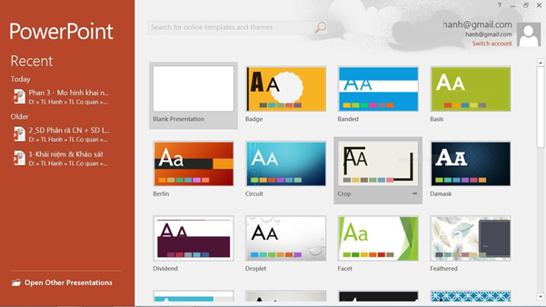
Hình 5.1. Màn hình khởi động PowerPoint
Tại đây, chúng ta có thể chọn lựa cách thức để bắt đầu với một bài trình chiếu:
- Chọn Blank Presentation để tạo trình chiếu mới
- Chọn các template (mẫu) theo chủ đề.
- Mục Recent: mở bài trình chiếu sử dụng gần đây
- Open Other Presentation: mở một bài chiếu khác.
1.2 Màn hình PowerPoint
Mặc định, màn hình chính khi chọn Blank Presentation gồm các phần:
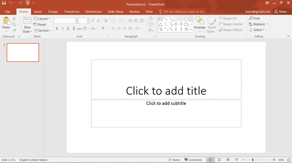
Hình 5.2. Màn hình chính của PowerPoint
Tab
File: cho phép thực hiện các thao tác trong việc
quản lý dữ liệu và tập tin như: tạo
mới (New) , lưu (Save/Save As), in ấn(Print) và điều chỉnh các tùy chọn (Options).
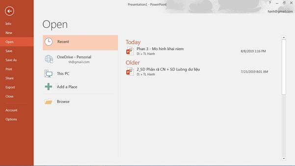
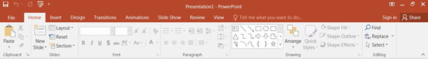
Hình 5.3. Thanh Ribbon của PowerPont
- Ý nghĩa của các Ribbon
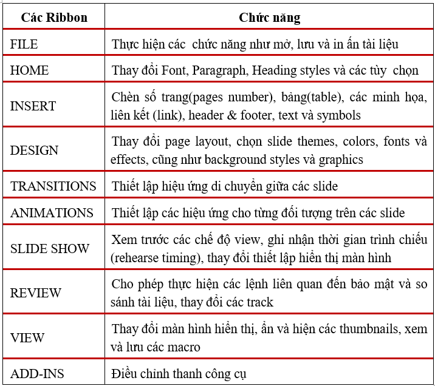
Bảng 5-1 Ý nghĩa của menu
- Tùy chỉnh Ribbon
Với PowerPoint, người dùng dễ dàng điều chỉnh các tab trên Ribbon để hiển thị các lệnh thường dùng.
- Click trên tab File -> click Options -> trong hộp thoại Option -> chọn Customize Ribbon (1) -> chọn New tab (2) -> chọn lệnh từ danh sách Choose command from (Popular Commands) (3)
- Với mỗi command được chọn, click Add (4) để thêm command vào tab mới.
- Click Rename (5) để đổi tên tab theo ý muốn.
- Click OK để tất cả các hiệu chỉnh ở trên có hiệu lực.
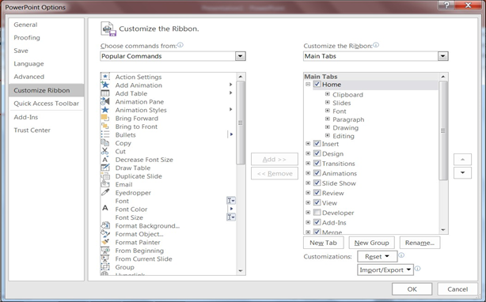
Hình 3.4. Màn hình hiển thị tab mới ở Ribbon:
- Các chế độ hiển thị (View)
Chọn từ Status bar ở góc phải dưới của cửa sổ PowerPoint hoặc chọn các biểu tượng tương ứng từ menu View.
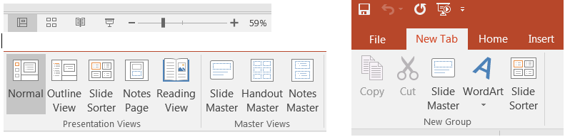
- Hiệu chỉnh
khung nhìn PowerPoint
Ở chế độ Normal view hay Slide Sorter view,
chúng ta có thể thay đổi kích thước màn hình hiển thị nội dung của slide bằng cách:
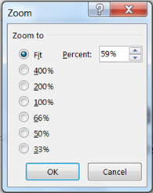
- Từ góc phải dưới của thanh Status bar trong cửa sổ PowerPoint, chọn Zoom level, màn hình sau xuất hiện, chọn tỉ lệ % hoặc nhập vào con số mong muốn ở Percent.
- Hoặc chọn từ View tab à Zoom group à chọn Zoom button.
- Hoặc kéo biểu tượng Zoom ở góc phải dưới của thanh Status bar như hình dưới
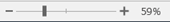
1.3 Thao tác với trang trình chiếu (Presentation)
1.3.1 Tạo file trình diễn mới
- Trình tự thực hiện:
Trên tab File à chọn New, cửa sổ New Presentation xuất hiện với tùy chọn
Blank Presentation được tô sáng
- Click Create để tạo mới slide
Nếu muốn áp dụng các Themes của PowerPoint, click menu Design để hiển thị Ribbon các Themes. Design Themes là các mẫu slide có định dạng sẵn với font chữ, màu sắc, hiệu ứng, …
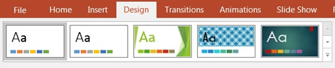
- Chọn Theme tùy thích để áp dụng cho slide.
1.3.2 Thay đổi Slide Layout
Slide layout dùng để thiết lập cấu trúc hiển thị nội dung cho mỗi slide. Trình tự thực hiện:
- Click chọn slide muốn thay đổi cấu trúc
- Chọn Home trên thanh thực đơn
- Ở mục Slides, chọn Layout
- Từ danh sách xổ xuống, chọn cấu trúc slide mong muốn
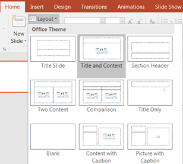
Hình 5.5. Lựa chọn cấu trúc slide
1.4 Thao tác với slide
1.4.1 Thêm mới và gỡ bỏ slide
Menu Home à(Group Slides) à chọn New Slide, một slide với cấu trúc mặc định sẽ được thêm vào file trình diễn. Nếu chúng ta muốn chọn cấu trúc slide khác, chọn từ drop down list của New Silde như hình dưới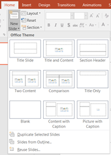
Hình 5.6. Thêm mới slide
- Các tùy chọn khác khi thêm mới slide
- Cho phép xóa slide khỏi bài trình chiếu.
Chọn một slide (hoặc nhiều slide) cần xóa à Right Click à Delete Slide (hoặc chọn Group Clipboard à tab Home à chọn biểu tượng Cut)
- Ẩn Slide: Cho phép ẩn slide trong bài trình chiếu nhưng không xóa đi. Chọn slide cần che giấu à Right Click à Chọn Hide slide
1.4.3 Định dạng Slide
Chọn và thay đổi Themes
Chọn menu Design -> (Group Themes) -> chọn Themes tùy ý.
Người dùng được phép thay đổi màu nền, font chữ cho Themes bằng cách chọn từ dropdown list.
Định dạng nền
PowerPoint cho phép thay đổi nền (background) của slide theo các tùy chọn khác nhau. Nền của slide có thể là một màu chọn từ bảng màu, hoặc một nền được phối nhiều màu từ bảng màu, hoặc nền là một hình ảnh chọn từ ổ đĩa…
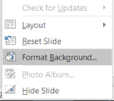
Trình tự thực hiện:
Chọn Slide à Right Click à chọn Format Background, xuất hiện khung
định dạng Format Background.
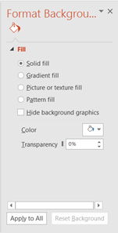
Solid fill: đây là tùy chọn không có ảnh hưởng nhiều đến nền của slide, tập trung vào điều chỉnh độ trong suốt của hình ảnh(Transparency).
Gradient fill: thay đổi màu sắc hình nền từ sáng sang tối và ngược lại.
Picture or texture fill: thay đổi nền slide là một hình ảnh.
Pattern fill: chọn mẫu màu sẵn có.
Hide backround graphic: ẩn hình nền
1.4.4 Thêm nội dung Footer
Nội dung Footer là nội dung sẽ xuất hiện ở cuối mỗi slide, thường có nội dung giống nhau cho tất cả slide. Những nội dung thường chèn vào ở Footer gồm: Ngày tháng năm (date and time); Số thứ tự slide (Slide number); Nội dung tùy chọn (Custom text)
- Trình tự thực hiện:
- Chọn Ribbon Insert à(Group Text) à Header & Footer, xuất hiện hộp thoại Header & Footer
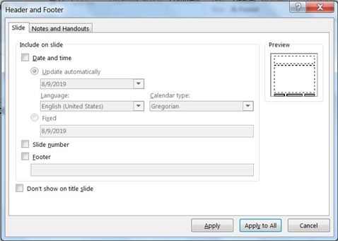
Hình 5.7. Hộp thoại Header&Footer
Include on slide: chọn tùy chọn mong muốn và hiệu chỉnh nếu cần thiết.
Nút Apply: thêm Footer cho slide hiện hành.
Nút Apply to all: thêm Footer cho tất cả slide.
1.4.5 Định dạng bằng Slide MasterViệc định dạng cho từng slide có thể làm mất nhiều thời gian để soạn một bài trình chiếu. Slide Master cho phép thực hiện các công việc định dạng trên toàn bộ slide, trên các cấu trúc của slide và sử dụng cho tất cả các slide con của bài trình chiếu. Do đó, chỉ cần thay đổi một định dạng của slide master, định dạng của các slide con sẽ thay đổi theo. Slide master không chứa nội dung, chỉ chứa các đối tượng để định dạng. Công việc định dạng trên slide master thực hiện tương tự như định dạng từng slide đơn.
Trình tự thực hiện:
- Chọn Ribbon Viewà (Group Master View) à chọn Slide Master, xuất hiện giao diện định dạng Slide Master à thực hiện định dạng cho Slide Master như slide đơn.
- Sau khi định dạng xong, chọn chế độ hiển thị Normal hoặc chọn (Group Close) à chọn Close Master View, giao diện sẽ trở lại trạng thái soạn thảo nội dung cho từng slide đơn.
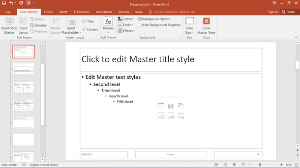
Hình 5.8. Định dạng Slide Master
1.5 Chèn và định dạng các đối tượng trong Slide
- Soạn thảo nội dung cho Slide
Trong PowerPoint, văn bản được đặt trong các Place holder hoặc các textbox. Lưu ý: các thao tác định dạng văn bản (font chữ, in đậm, nghiêng, gạch dưới, Bullets and Numerbing, …) và chèn các đối tượng (table, biểu đồ, wordart, hình ảnh, header, footer,…) được thực hiện như khi sử dụng Microsoft Word (Xem thêm nội dung Chương 1)
- Thêm vào đối tượng đồ họa
Chọn Ribbon Insert -> (Group Illustrations) -> Chọn các tùy chọn tương ứng.
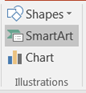
Shapes: các hình vẽ cơ bản
SmartArt: biểu đồ cấu trúc tùy chỉnh
- Thêm tranh vào slide
Chọn Ribbon Insert -> Group Images, xuất hiện hộp tùy chọn.
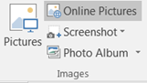
- Chèn văn bản
Chọn Ribbon Insert à (Group Text), xuất hiện hộp tùy chọn:
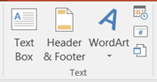
Textbox: chèn đối tượng để nhập văn bản
WordArt: chèn chữ nghệ thuật- Định dạng các đối tượng đồ họa
Tất cả các đối tượng đồ họa như textbox, picture, wordart, shape, clipart… đều có chung một cửa sổ Format để tùy chỉnh các định dạng. Để mở cửa sổ này, thực hiện Right Click trên đối tượng và chọn Format Shape.
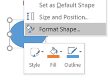
- Nhóm Fill&Line: định dạng mầu nền và đường kẻ
- Nhóm Effects: định dạng các hiệu ứng đổ bóng, 3D….
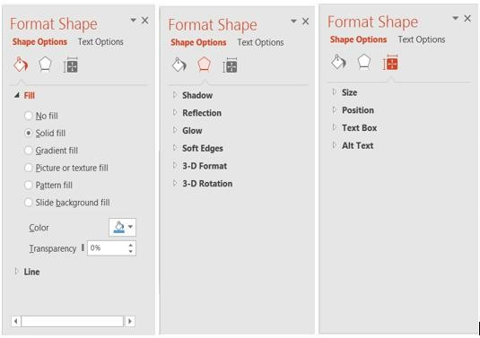
Hình 5.9. Định dạng các đối tượng đồ họa trong PowerPoint
- Nhóm Size & Properties: định dạng kích thước, vị trí chữ và các thuộc tính khác trong textbox.
Để tạo một trình chiếu với nội dung mỗi slide là một hình ảnh có sẵn.
Chọn Ribbon Insert -> Photo Album -> New Photo Album, xuất hiện hộp thoại Photo Album.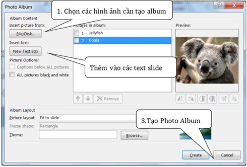
Hình 5.10. Hộp thoại Photo Album
- Thêm đoạn phim (video)/âm thanh (audio) vào slide
Thêm video
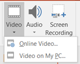
Chọn Insert -> Video, chọn một trong các kiểu video
• Video on My Computer: sử dụng các file video có sẵn để thêm vào slide.
• Online Video: thêm vào liên kết đến các video trên website.
- Chèn file video trên máy tính
Insert tab -> (Group Media) -> chọn Video on My PC -> hộp thoại Insert Video -> chọn video muốn chèn -> Insert.
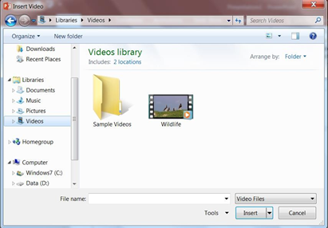
Hình 5.11. Hộp thoại chèn video trên máy tính cá nhân
Chèn video từ trang website
Insert tab -> (Group Media) -> Online Video -> hộp thoại Insert Video -> chọn video muốn chèn -> Insert.
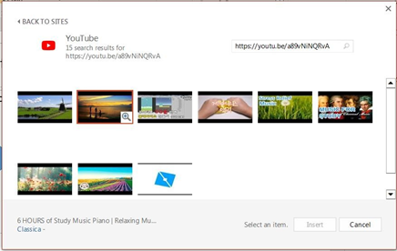
- Tạo liên kết dữ liệu
Chúng ta có thể sử dụng các đối tượng đồ họa hay văn bản để tạo một liên kết đến: các tập tin có sẵn/ các địa chỉ website/địa chỉ e-mail/các slide trên cùng 1 bài trình chiếu.
Tạo liên kết đến slide trong cùng một bài trình chiếu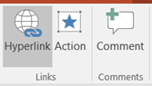
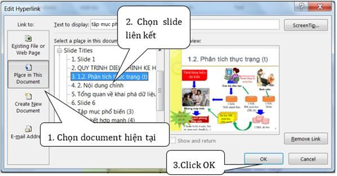
Hình 5.13. Hộp thoại Edit Hyperlink
Tạo liên kết đến các tập tin cõ sẵn hay trang web.
Chọn Ribbon Insertà(Group Links) à click Hyperlink, xuất hiện màn hình Edit Hyperlink
Chọn Existing File or Web Page à Chọn file liên kết à Ấn OK.
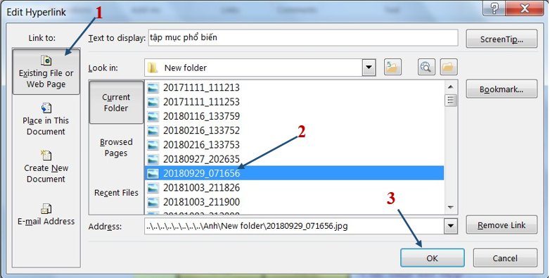
Tạo liên kết đến địa chỉ email:
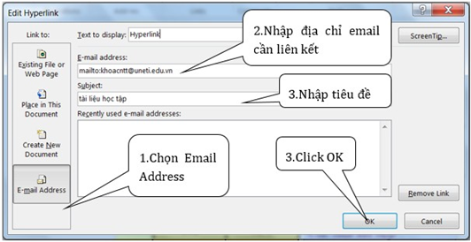